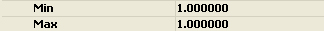
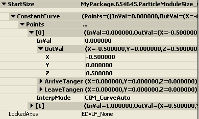
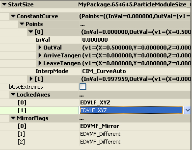

UDN
Search public documentation:
DistributionsCH
English Translation
日本語訳
한국어
Interested in the Unreal Engine?
Visit the Unreal Technology site.
Looking for jobs and company info?
Check out the Epic games site.
Questions about support via UDN?
Contact the UDN Staff
日本語訳
한국어
Interested in the Unreal Engine?
Visit the Unreal Technology site.
Looking for jobs and company info?
Check out the Epic games site.
Questions about support via UDN?
Contact the UDN Staff
分布
概述
分布类型
Float Distributions(浮点型分布)
当有需要美术人员控制的标量属性时，使用浮点型分布。一个实例便是粒子的生命周期或发射器的产生速率。DistributionFloatConstant(浮点常量分布)
这种类型用于为常量属性提供一个值。 当选中这个类型时，将会提供以下对话框来编辑值：
DistributionFloatConstantCurve(浮点常量曲线分布)
这种类型用于为分布在曲线编辑器上的随着时间变化属性提供值。时间是绝对的(随着发射器的生命周期)或相对的(随着单个粒子的生命周期)取决于使用这个分布的模块。 当选中这个类型时，将会提供以下对话框来编辑值： 注意所有文本域都可以进行手动编辑，但是使用曲线编辑器来编辑这些值是我们推荐的方法。
注意所有文本域都可以进行手动编辑，但是使用曲线编辑器来编辑这些值是我们推荐的方法。
DistributionFloatUniform(浮点型均匀分布)
这个类型用于为属性提供一定范围内的值。当计算时，在选中的范围随机地设置返回的值。 当选中这个类型时，将会提供以下对话框来编辑值：
DistributionFloatUniformCurve(浮点型均匀曲线分布)
这个类型用于为分布在曲线编辑器上随着时间变化的属性提供一定范围的值。 当选中这个类型时，将会提供以下对话框来编辑值： 和使用ConstantCurve(常量曲线)类型一样，我们推荐使用曲线编辑器来编辑这个分布类型。
和使用ConstantCurve(常量曲线)类型一样，我们推荐使用曲线编辑器来编辑这个分布类型。
DistributionFloatParticleParam(浮点型粒子参数分布)
这种类型用于为发射器的参数进行简单的游戏代码设置。它提供了把输入值从一个范围映射到另一个范围的功能，允许您在"Cascade-空间"中调整参数而不需要更新游戏形代码。一旦游戏性编程人员定义了一个可靠的输入范围，美术工作人员便可以通过Output(输出)映射自由地调整属性了。 当选中这个类型时，将会提供以下对话框来编辑值： ParameterName(参数名称)：脚本代码通过该参数名称来访问参数。
MinInput和MaxInput(最小输入和最大输入)是可以传递到参数中一系列的值，一般通过游戏代码设置。
MinOutput和MaxOutput(最小输出和最大输出)是应用到粒子系统中的参数上的值。
ParamMode(参数模式)决定了如何使用输入值。支持以下标志：
ParameterName(参数名称)：脚本代码通过该参数名称来访问参数。
MinInput和MaxInput(最小输入和最大输入)是可以传递到参数中一系列的值，一般通过游戏代码设置。
MinOutput和MaxOutput(最小输出和最大输出)是应用到粒子系统中的参数上的值。
ParamMode(参数模式)决定了如何使用输入值。支持以下标志：
| ParamMode(参数模式)标志 | 描述 |
|---|---|
| DPM_Normal | 保持输入值不变。 |
| DPM_Direct | 直接使用输入值(没有重新映射)。 |
| DPM_Absolute | 在进行重新映射之前，使用输入值的绝对值。 |
ParticleComponent->SetFloatParameter('MyParameter', CurrentParameter);
DistributionFloatSoundParameter(浮点型声效参数分布)
这种类型和DistributionFloatParticleParam类似，但是它用于SoundCue(声效)。它用于从代码中修改SoundCue的属性。比如，如果当您想在开动汽车时使引擎噪声的音调升高，那么您需要为那个噪声创建一个SoundCue，并添加一个SoundNodeModulatorContinuous节点。然后，在PitchModulation(音调调制)属性上使用DistributionFloatSoundParameter。Vector Distributions(向量分布)
向量分布用于美术人员控制的基于向量的属性。比如粒子的大小或者速度。DistributionVectorConstant(向量常量分布)
这种类型用于为常量属性提供一个值。 当选中这个类型时，将会提供以下对话框来编辑值： LockedAxes(锁定坐标轴)标志允许用户锁定一个坐标轴的值为另一个坐标轴的值。支持以下标志：
LockedAxes(锁定坐标轴)标志允许用户锁定一个坐标轴的值为另一个坐标轴的值。支持以下标志：
| LockedAxes(锁定坐标轴) 标志 | 描述 |
|---|---|
| EDVLF_None | 不把坐标轴锁定为另一个坐标轴上的值。 |
| EDVLF_XY | 锁定Y-轴的值为X-轴的值。 |
| EDVLF_XZ | 锁定Z-轴的值为X-轴的值。 |
| EDVLF_YZ | 锁定Z-轴的值为Y-轴的值。 |
| EDVLF_XYZ | 锁定Y-轴和Z-轴的值为X-轴的值。 |
DistributionVectorConstantCurve(向量常量曲线分布)
这种类型用于为分布在曲线编辑器上的随着时间变化属性提供值。时间是绝对的(随着发射器的生命周期)或相对的(随着单个粒子的生命周期)取决于使用这个分布的模块。 当选中这个类型时，将会提供以下对话框来编辑值：
和使用FloatConstantCurve(浮点常量曲线)一样，我们推荐通过曲线编辑器来编辑这种分布类型。 注意： 当一个ConstantCurve(常量曲线)分布的LockedAxes标志设置为除EDVLF_None以外的其它选项时，为了避免混淆曲线编辑器将不会显示锁定的坐标轴。比如，当标志设置为EDVLF_XY，那么曲线编辑器将仅包含X和Z曲线。DistributionVectorUniform(向量均匀分布)
这个类型用于为属性提供一定范围内的值。当计算时，在选中的范围随机地设置返回的值。当选中这个类型时，将会提供以下对话框来编辑值： bUseExtremes(使用极端值)标志意味选择的值应该作为Min(最小值)或者Max(最大值)，把这些值限定为这两个极端值其中的一个。
MirrorFlags(镜像标志)用于镜像值的每个分量的Min/Max(最小/最大)值。镜像支持以下标志：
bUseExtremes(使用极端值)标志意味选择的值应该作为Min(最小值)或者Max(最大值)，把这些值限定为这两个极端值其中的一个。
MirrorFlags(镜像标志)用于镜像值的每个分量的Min/Max(最小/最大)值。镜像支持以下标志：
| MirrorFlags(镜像标志) | 描述 |
|---|---|
| EDVMF_Same(相同) | 在Min(最小值)处使用Max (最大值)。 |
| EDVMF_Different(不同) | 按照最初设置使用每个值。 |
| EDVMF_Mirror | 在Min(最小值)处使用Max(最大值)的负值。 |
DistributionVectorUniformCurve(向量均匀曲线分布)
这个类型用于为分布在曲线编辑器上随着时间变化的属性提供一定范围的值。 当选中这个类型时，将会提供以下对话框来编辑值：
和其它曲线类型一样，我们推荐通过曲线编辑器来编辑这种分布类型。DistributionVectorParticleParam(向量粒子参数分布)
这个类型是上面讨论的FloatParticleParam类型的向量类型等价物。 当选中这个类型时，将会提供以下对话框来编辑值：